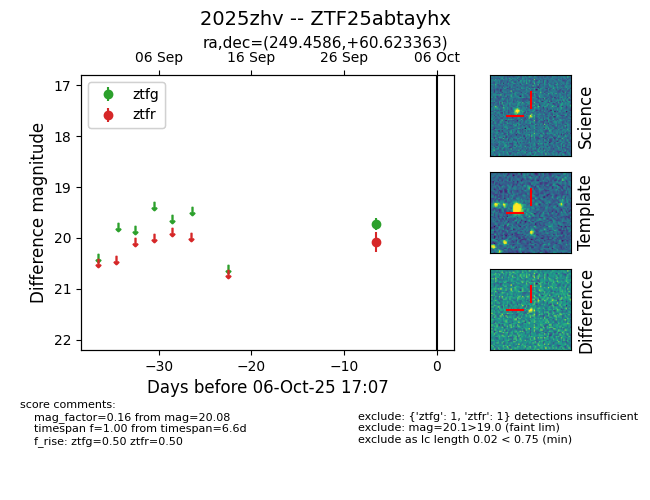

FINK: ZTF25abtayhx
Lasair: ZTF25abtayhx
ALeRCE: ZTF25abtayhx
TNS: 2025zhv
YSE: 2025zhv
ZTF25abtayhx (ztf,fink)
2025zhv (tns,yse)
equatorial (ra, dec) = (249.4586,+60.62336)
galactic (l, b) = (90.8148,+39.61952)

last ztfg=19.73, ztfr=20.08
1 ztfg, 1 ztfr detections